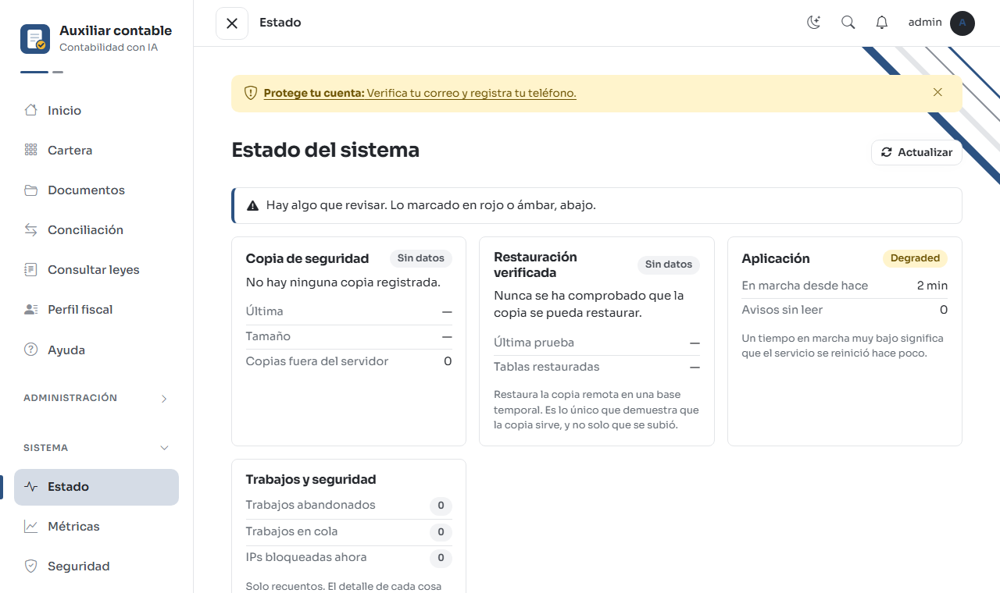
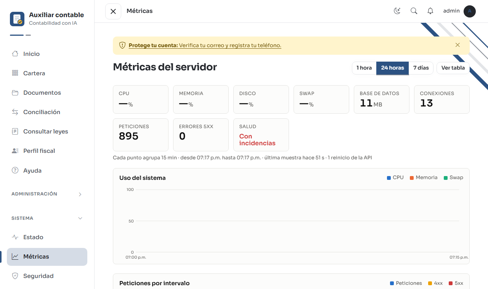
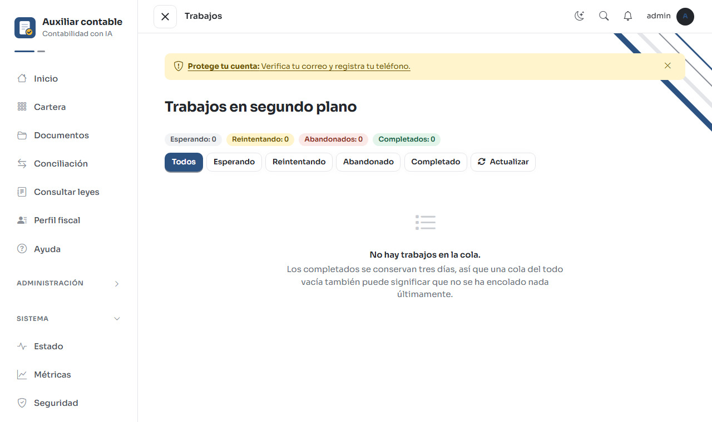
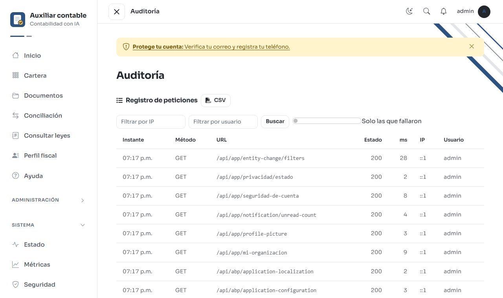
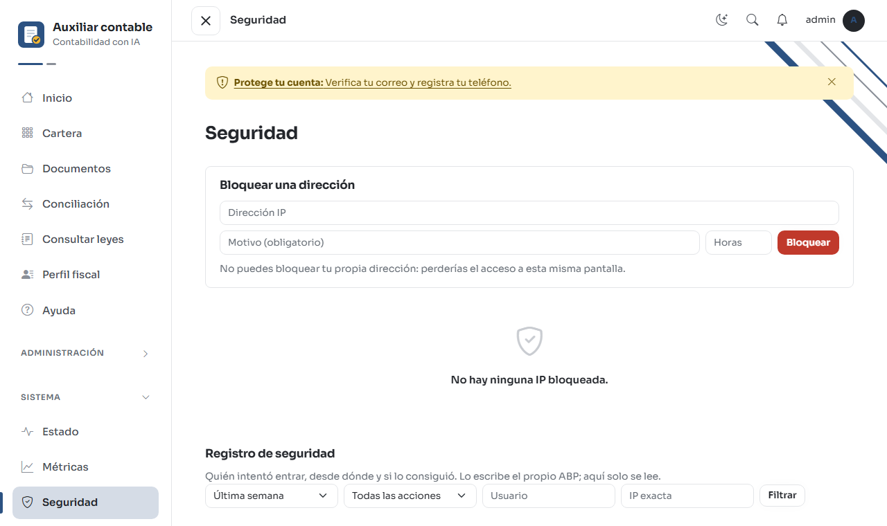
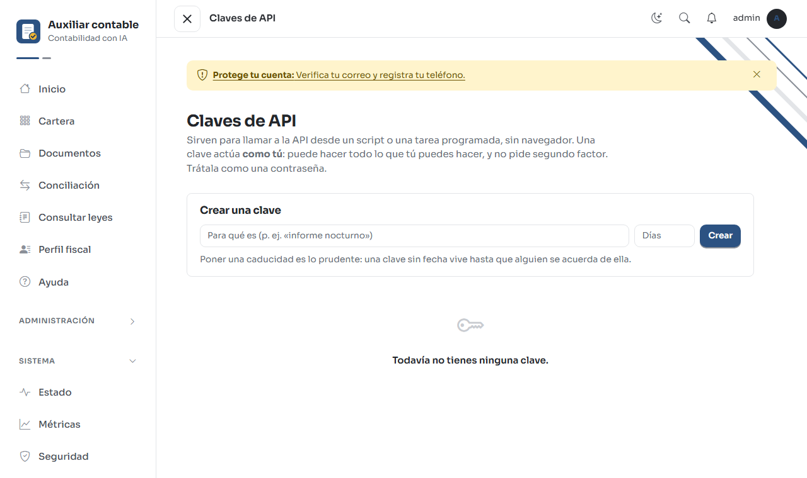
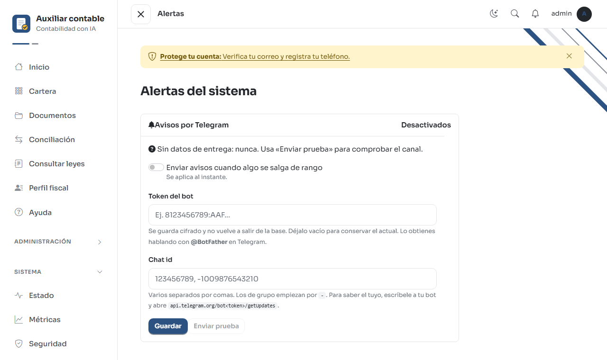
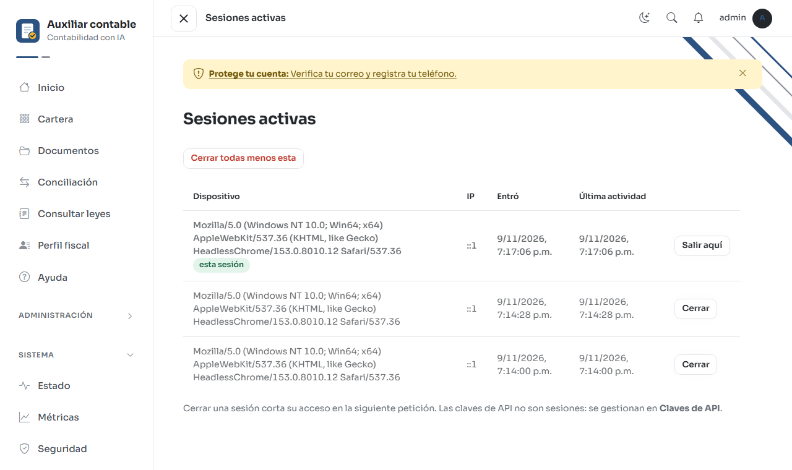

1. Las piezas
Auxiliar Contable es el front y la infraestructura: identidad, roles, clientes, documentos, chat y operación. Los cálculos fiscales y contables viven en el motor (motores-fiscales, Python), que corre al lado como servicio interno.
| Repositorio | Qué contiene |
|---|---|
Roque98/Auxiliar-Contable | Este sistema: AuxiliarContable/ (solución ABP, angular/, e2e/), deploy/ (scripts y unidades systemd), docs/ (visión, plan, trampas, manuales) y CLAUDE.md (guía para agentes; la referencia más completa de convenciones) |
Roque98/motores-fiscales | Motor fiscal: RAG de leyes, librería contable y aduanera, Armador SAT, lector de estados de cuenta y servicio/ (API interna) |
Roque98/legado-despacho | Referencia: nómina, COI en Excel, deducibilidad, claves, costos y trámites. No se despliega |
2. Levantarlo en local
Probado en Windows 10 sin permisos de administrador; en Linux o Mac los pasos son los mismos con sus rutas.
| Herramienta | Versión | Nota |
|---|---|---|
| .NET SDK | 10.0.402 | Fija, la misma del CI. Se instala por usuario con dotnet-install.ps1 -Version 10.0.402 |
| Node.js | 24.x | abp install-libs y el Angular CLI lo exigen (con 22 falla select2) |
| Yarn | 1.22 (clásico) | corepack yarn@1.22.22; el proyecto usa yarn.lock v1 |
| PostgreSQL | ≥ 14 (CI: 18) | Rol con CREATEDB: las pruebas de integración crean y borran sus bases |
| ABP CLI | Volo.Abp.Studio.Cli | dotnet tool install -g Volo.Abp.Studio.Cli |
- Clonar
gh repo clone Roque98/Auxiliar-Contable cd Auxiliar-Contable/AuxiliarContable - Secretos de desarrollo (nunca en
appsettings*.json). Desdesrc/AuxiliarContable.HttpApi.Host:
Y endotnet user-secrets set "ConnectionStrings:Default" "Host=localhost;Port=5432;Database=auxiliar_contable;Username=...;Password=..." dotnet user-secrets set "AuthServer:CertificatePassPhrase" "<frase>" dotnet user-secrets set "StringEncryption:DefaultPassPhrase" "<frase>" dotnet user-secrets set "Documentos:ClaveDeCifrado" "<32 bytes en base64>" dotnet user-secrets set "Claude:ApiKey" "<opcional: sin ella el chat dice que no está disponible>"src/AuxiliarContable.DbMigratorsoloConnectionStrings:Default. - Librerías del login (no están versionadas; sin ellas la API responde «The Libs folder is missing»):
abp install-libs - Base de datos: migrar y sembrar (crea al usuario
admin). Se corre desde la carpeta del proyecto:cd src/AuxiliarContable.DbMigrator DOTNET_ENVIRONMENT=Development dotnet run - API en
https://localhost:44338(Swagger en/swagger):dotnet run --project src/AuxiliarContable.HttpApi.Host - Front en
http://localhost:4201:cd angular && yarn install --frozen-lockfile && yarn start - Entrar con
admin/1q2w3E*(la cuenta Developer de desarrollo). Cambia la contraseña y crea al Owner desde Administración → Usuarios.

3. Roles en el código
Hay cuatro niveles. Cada persona tiene el nivel de su rol más alto y solo alcanza lo que está estrictamente por debajo (más a sí misma). El Developer lo alcanza todo y nadie lo ve.
| Rol | Nombre técnico | Nivel | Quién es | Permisos con los que nace |
|---|---|---|---|---|
| Developer | admin (el de ABP) | 3 | Quien mantiene la consola. Invisible para los demás | Todos, incluidos los que se agreguen mañana (ABP se los concede en cada migración) |
| Owner | owner | 2 | El dueño del despacho | Usuarios (crear, editar, borrar, roles, permisos), Roles (todo), Organizaciones, Actividad, Marca |
| Administrador | administrador | 1 | El equipo del despacho (contadores) | Usuarios (crear, editar, borrar, asignar rol), Organizaciones, Actividad |
| Usuario | usuario | 0 | La persona del cliente | Ninguno global: lo que ve lo decide su papel en su organización |
| Dónde | Qué decide |
|---|---|
Domain.Shared/Identity/AuxiliarRoles.cs | Nombres y niveles. Única fuente de «quién alcanza a quién» |
Domain/Identity/PermisosInicialesPorRol.cs | Con qué permisos NACE cada rol. Después los cambia el Owner en la pantalla de Roles |
Domain/Identity/PermisosNuevosPorVersion | Permisos que aparecen después: se conceden UNA vez a los roles existentes. Solo se añaden versiones al final |
Application/Identity/AuxiliarIdentityUserAppService.cs | Sustituye al de ABP: jerarquía al listar, editar y asignar; un Usuario se crea dentro de una organización (ExtraProperties["OrganizacionId"]) |
Application/Autorizacion/Autorizador.cs | Único punto de decisión por cliente: Ver o Subir. Lo ajeno responde 404, no 403 |
Domain/Organizaciones/MembresiasDeOrganizacion.cs | Papel dentro de un cliente: Administrador (gestiona a su gente), Miembro (sube y ve) o Lector (solo ve) |
angular/src/app/ayuda/manual.ts | La ayuda dentro de la app: cada tema dice qué permiso necesita y solo se enseña a quien lo tiene |
El equipo del despacho (Owner y Administradores) ve a todos los clientes sin pertenecer a ninguno. El aislamiento estricto es entre clientes: cada servicio y cada herramienta del chat pasa por Autorizador, y hay pruebas de «el usuario A no ve nada de B».
4. Módulos
| Módulo | Pantalla | Notas |
|---|---|---|
| Inicio | / | InicioComponent: saludo, cifras del mes y atajos por rol. Con el chat encendido manda a /asistente |
| Conversaciones (chat) | /asistente | Apagado en producción (no hay API de Claude): ajuste AuxiliarContable.Asistente.Habilitado, false en appsettings.json del host; se enciende con Settings__AuxiliarContable.Asistente.Habilitado=true y Claude__ApiKey. Apagado, el menú y los botones no lo ofrecen (shared/chat.ts) y el servicio lo rechaza sin llamar al modelo |
| Consultar leyes | /leyes | LeyesAppService → motor /rag/buscar. Sin IA; cualquiera con sesión |
| Conciliación | /conciliacion | BancosAppService: los estados de cuenta y XML del mes de la bóveda → motor /bancos/conciliar con el RFC del perfil. No guarda nada. Solo el equipo |
| Cartera | /cartera | Semáforo por cliente con lo que la app sabe (perfil y documentos recibidos). Métricas solo nivel ≥ Owner |
| Bóveda | /documentos | Guarda cifrado, ordena por mes y tipo. No interpreta el contenido: eso es del motor |
| Perfil fiscal | /perfil-fiscal | Un dato por campo del catálogo, con su origen y si está confirmado. Al subir la constancia, el motor (/csf/leer) la lee y sus datos se proponen sin confirmar; nunca pisan lo confirmado por una persona (sale como aviso) |
| Organizaciones | /organizaciones, /mi-organizacion | 1 cliente = 1 RFC |
| Identidad | /identity/users, /identity/roles, /invitaciones | Invitación por correo (Brevo) con enlace de un solo uso |
| Operación | /system-status, /metrics, /jobs, /audit, /security | Solo Developer por defecto |
Acceso a datos: escritura con EF Core; lectura compleja con SqlQueryRaw y SQL versionado en EntityFrameworkCore/**/Sql/*.sql; fuentes externas de solo lectura con Dapper. Migraciones incrementales en EntityFrameworkCore/Migrations (dotnet ef migrations add <Nombre>).
5. El motor fiscal
El repositorio motores-fiscales (el trabajo del contador) corre en el VPS como el servicio motores-fiscales: usuario motores sin shell, /srv/motores-fiscales, unidad systemd endurecida (2 GB máx.). Escucha solo en 127.0.0.1:5090; la consola lo llama por IMotorFiscal (Domain) y MotorFiscalHttp (Host), con MotorFiscal:Url. Un motor caído no tumba la consola: cada pantalla dice que no pudo consultar.
| Ruta | Qué hace | Quién la usa |
|---|---|---|
GET /salud | Qué piezas están disponibles | Diagnóstico |
GET /rag/buscar | Leyes, reglamentos, RMF y NIF con su cita (BM25 + citas) | Consultar leyes |
POST /bancos/leer | Estados de cuenta → movimientos y cuadre contra lo impreso | BancosAppService.LeerEstadoDeCuentaAsync |
POST /bancos/conciliar | Estados de cuenta + XML → factura de cada movimiento, facturas sin pago, alertas | Conciliación |
POST /csf/leer | Constancia del SAT → RFC, nombre, CP, regímenes, obligaciones, actividades | Perfil fiscal (al subir la constancia) |
Leer archivos con claude -p
Lo que el método de siempre no puede comprobar contra los saldos del banco (escaneos, fotos, un original que no cuadra) lo lee claude -p con la sesión de claude.ai del usuario motores, nunca con saldo de la API (el lector quita ANTHROPIC_API_KEY). Cada lectura se guarda por la huella del archivo en /srv/motores-fiscales/estado/lecturas_claude: el mismo archivo no se vuelve a mandar. En pantalla, la cuenta dice «Leída con Claude».
- Ejecutable:
/opt/claude-code/claude(copia fija; no se actualiza sola). El de root (/root/.local/bin/claude) es aparte. - Sesión:
/srv/motores-fiscales/estado/claude(CLAUDE_CONFIG_DIRde la unidad), propia del motor: no choca con la de root. Si se cierra la sesión de esa cuenta en claude.ai, repetir el/login:
ssh vps
cd /srv/motores-fiscales && sudo -u motores env HOME=/srv/motores-fiscales/estado CLAUDE_CONFIG_DIR=/srv/motores-fiscales/estado/claude DISABLE_AUTOUPDATER=1 /opt/claude-code/claude
# adentro: /login y /exit; luego, como root:
systemctl restart motores-fiscalesConciliar puede tardar minutos la primera vez: la consola espera hasta 15 min (MotorFiscal:TimeoutDeBancosSegundos) y nginx da 900 s solo a /api/app/bancos/ (deploy/nginx.conf; en el VPS se aplicó a mano, porque el despliegue no toca nginx).
# actualizar el motor en el VPS (el servidor no tiene acceso a GitHub)
git -C motores-fiscales bundle create mf.bundle <ultimo-en-el-vps>..main
scp mf.bundle vps:/tmp/ && ssh vps 'cd /srv/motores-fiscales && sudo -u motores git fetch /tmp/mf.bundle main:refs/remotes/bundle/main && sudo -u motores git merge --ff-only bundle/main && systemctl restart motores-fiscales'
# pruebas del servicio (datos inventados)
ssh vps 'cd /srv/motores-fiscales && sudo -u motores .venv/bin/python servicio/probar_bancos.py && sudo -u motores .venv/bin/python servicio/probar_csf.py'6. Pruebas
dotnet build AuxiliarContable.slnx -c Debug # advertencias = errores
dotnet test test/AuxiliarContable.Architecture.Tests # capas y convenciones
dotnet test test/AuxiliarContable.Domain.Tests
dotnet test test/AuxiliarContable.Integration.Tests # PostgreSQL real (AUXILIARCONTABLE_TEST_POSTGRES)
cd angular && yarn test:unit # vitest (el CI usa esto, no ng test)El CI (.github/workflows/ci.yml) corre build, todas las pruebas contra PostgreSQL 18, pruebas del front y gitleaks en cada push y pull request.
7. Desplegar
- Rama nueva, cambios, pull request. Esperar el CI en verde.
- Fusionar a
main. - Lanzar el despliegue (manual):
gh workflow run deploy.yml --ref main, o desde Actions → «Deploy a VPS». - El workflow repite el CI, publica API, DbMigrator y Angular, los sube a
/srv/auxiliar-contable/staging, migra ANTES de intercambiar versiones y comprueba/health-statusy el límite de peticiones.
Las migraciones corren en cada despliegue. Una que borra tablas (como QuitarLecturaDeDocumentos) se aplica sin preguntar: revisa antes en producción que estén vacías.
8. Producción
| Qué | Dónde |
|---|---|
| Web / API | contable.ziacentro.mx / api-contable.ziacentro.mx (nginx + certificado propio) |
| Servicios | auxiliar-contable, auxiliar-contable-migrator, motores-fiscales (systemd) |
| Secretos | /etc/auxiliar-contable/env |
| Documentos | /var/lib/auxiliar-contable/documentos (cifrados) |
| Copias | pg_dump diario 03:30 + restic a almacenamiento externo; prueba de restauración programada |
| Consultas de solo lectura | ssh consulta_claude@VPS <base> < consulta.sql (rol pg_read_all_data, transacciones de solo lectura, sin comandos con \) |
Detalle completo de servidor, nginx, copias y endurecimiento en deploy/README.md.
9. El menú Sistema
Solo el Developer lo ve completo. El recorrido en video y luego cada pantalla:







Lo que ven los demás roles está en el Manual de usuario (docs/manuales/manual-usuario.html).
10. Regenerar el manual de usuario
Las capturas y los videos salen de la consola local con datos ficticios, nunca de producción. «Consultar leyes» necesita el índice del motor, que solo está en el VPS: se usa por un túnel SSH (solo viajan los datos inventados).
ssh -N -L 5091:127.0.0.1:5090 vps # túnel al motor (en otra terminal)
MotorFiscal__Url=http://127.0.0.1:5091/ dotnet run --project src/AuxiliarContable.HttpApi.Host
cd AuxiliarContable/e2e
npm ci && npx playwright install chromium
python manual/ejemplos/generar.py # estado de cuenta, facturas y constancia inventados (PyMuPDF)
node manual/sembrar.mjs # cuentas por rol, tres clientes, documentos y la constancia
node manual/capturar.mjs # docs/manuales/img/<rol>/*.png y docs/manuales/video/<rol>.webmLas cuentas de ejemplo están en e2e/manual/comun.mjs: duena (Owner), contador (Administrador) y lupita (Usuario de «Panadería La Espiga»). Para que la constancia salga «De tu constancia», la base local debe estar limpia (que el perfil no tenga ya esos datos confirmados). Los scripts se niegan a correr si la API no es localhost.
11. Problemas comunes
| Síntoma | Causa y arreglo |
|---|---|
| La API responde 500 «The Libs folder is missing» | Falta abp install-libs (con Node 24) |
select2: «engine node is incompatible» | Node 22; usar Node 24 |
| El front muestra «Http failure response … 0 undefined» | La API no está corriendo o el certificado de desarrollo no es de confianza: dotnet dev-certs https --trust |
| El login deja de responder tras varios intentos | Límite de peticiones por IP (10/min en rutas de credenciales). Esperar un minuto |
| «Una persona de un cliente (rol Usuario) tiene que entrar en una organización» | Al crear un Usuario por API, mandar extraProperties.OrganizacionId |
| Conciliación: «No hay estados de cuenta de MM/AAAA» | La bóveda agrupa por la fecha de subida (la lectura de fechas de CFDI y estados de cuenta se quitó con el front sin motores). Un estado de cuenta de octubre subido en noviembre cae en noviembre. Pendiente: fechar cada documento al subirlo |
| Una cuenta sale «Leída con Claude» y no cuadra | Escaneo o foto difícil. Pedir el PDF original del banco |
| Escaneos «no se pudo leer» aunque haya sesión | La sesión del usuario motores caducó o se cerró: repetir el /login (sección 5) |
| Un archivo con acentos «rotos» tras editarlo en PowerShell 5.1 | Get-Content lee UTF-8 sin BOM como ANSI. Usar [IO.File]::ReadAllText(ruta, [Text.Encoding]::UTF8) |